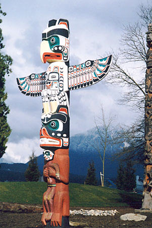
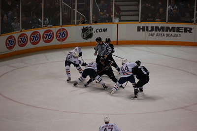

Канадский мультикультурализм
В ознаменование того, что Канада заселена народами различного происхождения, в стране с 1960-х годов распространена политика мультикультурализма, или многокультурности. В канадских городах можно найти элементы из культур всего мира; во многих городах существуют кварталы с преобладанием какого-либо национального меньшинства (например, китайский, итальянский, португальский кварталы в Торонто и Монреале), регулярно проводятся фестивали, посвящённые культурам разных стран. Приморские провинции сохраняют кельтский фольклор ирландцев и шотландцев, который в то же время хорошо сочетается с галло-романскими темами кельтской Галлии, преобладающими в Акадии и в Квебеке. Также заметно влияние коренного населения Канады: во многих местах можно встретить огромные тотемные столбы и другие предметы искусства коренных народов. Значительно выделяется франкоязычное население Канады. Оно придает особенную специфику характеру Канады; Монреаль является важнейшим центром франкоязычной культуры в Америке. Многие франкоязычные люди искусства приезжают в Монреаль из разных мест страны (Квебек, Акадия, Онтарио, Манитоба и т. д.), из США (особенно из Луизианы), а также из Карибского региона, чтобы сделать карьеру в области литературы, музыки, кино и т. д. Канадская культура находится под воздействием недавних иммигрантов изо всех частей света. Много людей приезжают в Канаду из Европы, с Ближнего Востока и из Африки, что способствует развитию соответствующих культурных элементов в жизни страны. Многие канадцы принимают многокультурность, и по взглядам некоторых людей можно судить, что культура Канады в узком смысле слова многоукладна. Многокультурное наследие Канады защищено статьей 27 Канадской хартии прав и свобод. Творчество и сохранение разнообразной канадской культуры частично зависит от программ федерального правительства, законов и таких политических учреждений, как Канадская радиовещательная корпорация (англ. The Canadian Broadcasting Corporation, фр. Société Radio-Canada), Государственная служба кинематографии (англ. National Film Board of Canada, фр. Office national du film du Canada), а также Совет по радио, телевидению и телекоммуникациям (англ. Canadian Radio-television and Telecommunications Commission, фр. Conseil de la radiodiffusion et des télécommunications canadiennes).
Федеральная политика двуязычия (билингвизм) и языки Канады
Канада — официально двуязычная страна. С 7 июля 1969 по Закону об официальных языках английский и французский языки имеют равноправный статус в парламенте, в федеральном суде и государственных учреждениях. Эта мера отражает важную историческую, политическую и культурную роль франкоязычного Квебека. Премьер-министр Канады по традиции выступает с речами в парламенте и на общественных мероприятиях частью по-английски, частью по-французски. Председатели всех четырёх федеральных партий владеют обоими языками. Все канадские федеральные служащие, обслуживающие население в учреждениях и по телефону, обязаны уметь объясняться и по-английски, и по-французски. Вся федеральная литература, от налоговых деклараций до брошюр и отчётов, издаётся на обоих языках. Английский язык является родным для 57,8 % населения, французский — для 22,1 %. 98,5 % канадцев владеют хотя бы одним из официальных языков (только по-английски говорят 67,5 %, только по-французски 13,3 %, обоими языками владеют 17,7 %). Около 5 200 000 чел. указали при переписи населения, что их родным языком является один из неофициальных языков — на первом месте по числу говорящих в последнее время уверенно утвердился китайский (в том числе кантонский), при 853 745 чел., за ним следует итальянский (469 485), затем немецкий (438 080) и, благодаря самому многочисленному сикхскому населению за пределами Индии, пенджабский (271 220). При этом необходимо учитывать, что эти данные не отражают в полной мере этнический состав Канады, так как родными эти языки являются только для иммигрантов первого поколения и пожилых родителей — их дети и внуки быстро переходят по приезде на английский или французский, или уже говорят на этих языках с детства. Попытки придать украинскому языку статус третьего государственного языка, начатые несколько десятилетий назад, когда процент славянского населения, для которого этот язык был родным, был весьма значительным, потеряли свою актуальность в связи с тем, что третье-четвёртое поколение украинских иммигрантов говорит только по-английски. Основным официальным языком во всех провинциях и территориях, исключая Квебек и Нью-Брансуик, является английский, однако, все документы и прочие официальные тексты в обязательном порядке дублируются на французском языке. В Квебеке официальный язык — французский. 85 % франкоязычных канадцев проживают в Квебеке. Значительные группы франкоговорящего населения проживают в северном Нью-Брансуике, а также в восточном и северном Онтарио, в южной Манитобе и в Саскачеване. В англоязычных провинциях Канады большой популярностью пользуются школы с преподаванием ряда или всех предметов на французским языке («программа французского погружения»): родители задолго до начала занятий записывают в них своих детей, так как двуязычие — большое преимущество при устройстве на государственную службу. Многочисленные местные языки признаны официальными в Северо-Западных территориях. В Нунавуте, новой канадской территории на крайнем севере, родным языком для большинства населения (инуитов) является инуктитут (диалект эскимосского языка), один из трёх официальных языков этой территории.
Спорт

В Канаде развиты различные виды спо́рта. Канадцы с настоящей страстью относятся к хоккею на льду, дисциплине, в которой они являются большими мастерами мирового уровня на протяжении многих лет. Объективно, вторая команда в мире. По всему миру Канада особенно хорошо выступает в зимних видах спорта (конькобежный спорт на короткой и длинной дистанции, фигурное катание, акробатические лыжи (прыжки на бугристой трассе), кёрлинг). На летних Олимпийских играх спортсмены особенно отличаются в прыжках в воду, беге на 100 м (особенно в 1990-х), синхронном плавании, гребном спорте и гребле на байдарках и каноэ.
Даже притом, что всё более и более популярным становится футбол, более распространёнными являются виды спорта, происходящие из США: канадский футбол (похожий на американский футбол), бейсбол и баскетбол. Впрочем, канадскую франшизу можно найти и в национальных американских чемпионатах (MLB, НБА). Именно в Канаде были установлены современные правила кёрлинга, и за этим видом спорта канадцы следят по телевизору наиболее массово, если не считать хоккей на льду. Баскетбол также увидел свет в Монреале при поддержке Джеймса Нейсмита.
В Монреале в 1976 состоялись XXI Летние Олимпийские Игры, в Калгари в 1988 — XV Зимние Олимпийские Игры и в Ванкувере в 2010 — XXI Зимние Олимпийские игры.
Спорт занимает большое место в жизни простых канадцев. Зимой вся страна проводит вечера у телевизора, болея за хоккейные команды и фигуристов. Детский спорт является нормой. Летними вечерами и по выходным целые семьи приезжают на районные и пришкольные стадионы поболеть за своих детей, как мальчиков, так и девочек. Всё больше родителей отдают своих дочерей с пяти-шести лет на хоккей и футбол, надеясь, что это не только укрепит их физически, но и разовьёт в них коллективизм и упорство. Порой одновременно на соседних полях проходит несколько матчей — по бейсболу, американскому и европейскому футболу. Многие семейные канадцы добровольно участвуют в жизни спортивных команд своих детей, тренируют школьников, готовят поле для игры, следят за инвентарём и т. д. В городах почти в каждом районе существуют плавательные бассейны и крытые ледовые катки, которые привлекают канадцев всех поколений, от малышей до стариков.
Официальным зимним спортом Канады является хоккей, это очень популярный досуг. К самым распространённым видам летнего спорта относятся национальная игра лакросс, а также хоккей на траве и футбол. Другими популярными в Канаде видами спорта являются фигурное катание, лыжный спорт, кёрлинг и канадский футбол (схожий с американским вариантом).
В 2010 году в Ванкувере и на расположенном к северу от города горнолыжном курорте Уистлер были проведены XXI Зимние Олимпийские Игры, на которых Канада в общекомандном зачете заняла первое место.